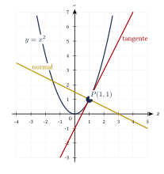
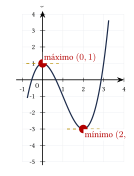
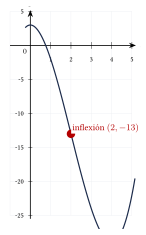
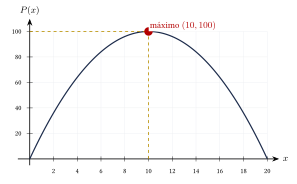

Capítulo 41
Aplicaciones de la derivada
UNAM IPN
La derivada permite estudiar el comportamiento de una función y resolver problemas de cambio y optimización.
Sus principales aplicaciones son:
- calcular rectas tangentes y normales;
- determinar velocidad y aceleración;
- localizar máximos y mínimos;
- estudiar crecimiento y concavidad;
- resolver problemas de optimización.
41.1 Recta tangente y recta normal#
Sea:
un punto de la gráfica de \(f\).
La pendiente de la recta tangente es:
Su ecuación es:
Si:
la pendiente de la recta normal es:
Su ecuación es:
La recta normal es perpendicular a la recta tangente. Por ello, cuando ambas pendientes están definidas:
Encuentra las rectas tangente y normal a:
en:
Ver solución
Calculamos el punto de tangencia:
Por tanto:
Derivamos:
La pendiente de la tangente es:
Su ecuación es:
Por tanto:
La pendiente de la normal es:
Su ecuación es:
Por tanto:

41.2 Velocidad y aceleración#
Si la posición de un objeto está dada por:
entonces su velocidad instantánea es:
La aceleración es:
El signo de la velocidad indica la dirección del movimiento:
- si \(v(t)>0\), la posición aumenta;
- si \(v(t)<0\), la posición disminuye;
- si \(v(t)=0\), el objeto está momentáneamente en reposo.
La posición de una partícula está dada por:
donde \(s\) se mide en metros y \(t\) en segundos.
Encuentra la velocidad y la aceleración en:
Ver solución
Derivamos la posición:
Derivamos la velocidad:
Evaluamos en \(t=2\):
Por tanto:
Para la aceleración:
Por tanto:
La posición de un objeto en caída está dada por:
Encuentra su velocidad en:
Ver solución
Derivamos:
Evaluamos:
Por tanto:
41.3 Crecimiento y decrecimiento#
El signo de la primera derivada permite determinar si una función crece o decrece.
Un número \(x_0\) del dominio de \(f\) es un número crítico si:
o si:
no existe.
No todo número crítico corresponde a un máximo o a un mínimo.
Es necesario analizar el cambio de signo de la primera derivada o utilizar el criterio de la segunda derivada.
41.4 Máximos y mínimos relativos#
Una función tiene un máximo relativo en \(x_0\) si \(f(x_0)\) es mayor o igual que los valores cercanos.
Tiene un mínimo relativo en \(x_0\) si \(f(x_0)\) es menor o igual que los valores cercanos.
41.4.1 Criterio de la primera derivada#
Sea \(x_0\) un número crítico.
- Si \(f'\) cambia de positiva a negativa, existe un máximo relativo.
- Si \(f'\) cambia de negativa a positiva, existe un mínimo relativo.
- Si \(f'\) no cambia de signo, no existe un extremo relativo.
41.4.2 Criterio de la segunda derivada#
Sea \(x_0\) un punto crítico en el que:
Entonces:
- si: \[f''(x_0)<0,\] existe un máximo relativo;
- si: \[f''(x_0)>0,\] existe un mínimo relativo;
- si: \[f''(x_0)=0,\] el criterio no permite concluir.
Encuentra los extremos relativos de:
Ver solución
Calculamos la primera derivada:
Factorizamos:
Igualamos a cero:
Los números críticos son:
Calculamos la segunda derivada:
Evaluamos en \(x=0\):
Por tanto, existe un máximo relativo en \(x=0\).
El máximo relativo es:
Evaluamos en \(x=2\):
Por tanto, existe un mínimo relativo en \(x=2\).
El mínimo relativo es:

41.5 Extremos absolutos en un intervalo cerrado#
Si una función es continua en un intervalo cerrado:
entonces alcanza un valor máximo absoluto y un valor mínimo absoluto en ese intervalo.
Para encontrar los extremos absolutos:
- calcula los números críticos dentro de: \[(a,b);\]
- evalúa la función en los números críticos;
- evalúa la función en los extremos: \[a \qquad\text{y}\qquad b;\]
- compara todos los valores obtenidos.
Encuentra los extremos absolutos de:
en:
Ver solución
La primera derivada es:
Los números críticos son:
Dentro del intervalo abierto \((0,3)\) solo se encuentra:
Evaluamos en el punto crítico y en los extremos:
El máximo absoluto es:
y se alcanza en:
El mínimo absoluto es:
y se alcanza en:
41.6 Concavidad y puntos de inflexión#
La segunda derivada permite estudiar la concavidad.
Un punto de inflexión es un punto de la gráfica en el que la concavidad cambia.
Los candidatos a puntos de inflexión se encuentran donde:
o donde \(f''(x)\) no existe.
Para confirmar un punto de inflexión, la segunda derivada debe cambiar de signo.
La condición:
no garantiza por sí sola que exista un punto de inflexión.
Encuentra los intervalos de concavidad y el punto de inflexión de:
Ver solución
Calculamos las derivadas:
Buscamos candidatos:
Analizamos el signo de la segunda derivada.
Si:
entonces:
Por tanto, la función es cóncava hacia abajo en:
Si:
entonces:
Por tanto, la función es cóncava hacia arriba en:
La concavidad cambia en \(x=2\), así que existe un punto de inflexión.
Calculamos:
El punto de inflexión es:

41.7 Problemas de optimización#
Para resolver un problema de optimización:
- identifica la cantidad que se desea maximizar o minimizar;
- escribe una función de una sola variable;
- determina el dominio físico del problema;
- calcula los números críticos;
- identifica el máximo o el mínimo;
- interpreta el resultado y escribe las unidades.
Encuentra dos números cuya suma sea \(20\) y cuyo producto sea máximo.
Ver solución
Sean los números:
El producto es:
Desarrollamos:
Derivamos:
Igualamos a cero:
El segundo número es:
Además:
por lo que el producto es máximo.
Los números son:
El producto máximo es:

Se construye una caja sin tapa a partir de una lámina cuadrada de \(12\) cm de lado.
Se recortan cuadrados de lado \(x\) en las cuatro esquinas y se doblan los lados. Encuentra el valor de \(x\) que produce el volumen máximo.
Ver solución
Las dimensiones de la caja son:
El volumen es:
El dominio físico es:
Desarrollamos:
Derivamos:
Factorizamos:
Los candidatos son:
El valor \(x=6\) no es válido porque la base se anula.
Por tanto:
Verificamos con la segunda derivada:
Por tanto, el volumen es máximo cuando:
Las dimensiones de la caja son:
El volumen máximo es:
41.8 Procedimiento rápido#
Tangente y normal#
- Calcula el punto: \[P(x_0,f(x_0)).\]
- Obtén: \[f'(x).\]
- Evalúa: \[m_t=f'(x_0).\]
- Usa la forma punto-pendiente.
- Para la normal, calcula: \[m_n=-\frac{1}{m_t}.\]
Máximos y mínimos#
- Calcula: \[f'(x).\]
- Busca los números críticos.
- Usa el cambio de signo de \(f'\) o calcula \(f''\).
- Evalúa la función para obtener los puntos.
Concavidad#
- Calcula: \[f''(x).\]
- Resuelve: \[f''(x)=0.\]
- Analiza el signo de \(f''\) en cada intervalo.
- Confirma si la concavidad cambia.
Optimización#
- Define la variable.
- Escribe la función objetivo.
- Reduce la función a una variable.
- Determina el dominio físico.
- Calcula los números críticos.
- Selecciona el resultado válido.
- Escribe la respuesta con unidades.
41.9 Resumen#
Pendiente tangente:
Pendiente normal:
Movimiento:
Crecimiento:
Decrecimiento:
Concavidad:
Criterio de la segunda derivada:
41.10 Errores frecuentes#
Recuerda:
- La pendiente tangente debe evaluarse en el punto: \[f'(x_0).\]
- La pendiente normal es el recíproco negativo, no solamente el negativo de la pendiente tangente.
- Un número crítico también puede aparecer donde la derivada no existe.
- La condición: \[f'(x_0)=0\] no garantiza por sí sola un máximo o un mínimo.
- Si: \[f''(x_0)=0,\] el criterio de la segunda derivada no permite concluir.
- Para confirmar un punto de inflexión debe cambiar la concavidad.
- En un intervalo cerrado deben evaluarse los puntos críticos y los extremos del intervalo.
- En optimización debe considerarse el dominio físico del problema.
- La respuesta final debe incluir unidades cuando corresponda.
41.11 Ejercicios propuestos#
Encuentra la recta tangente a:
en:
Ver solución
El punto es \((2,-1)\). La derivada es \(f'(x)=2x-3\), por lo que la pendiente tangente es \(m_t=f'(2)=1\). La ecuación de la recta tangente es \(y-(-1)=1(x-2)\), es decir, \(y=x-3\).
Encuentra la recta normal a:
en:
Ver solución
El punto es \((2,-1)\) y la pendiente tangente es \(1\). La pendiente normal es \(m_n=-1\). La ecuación de la recta normal es \(y-(-1)=-1(x-2)\), es decir, \(y=-x+1\).
La posición de un objeto es:
Encuentra la velocidad y la aceleración en:
Ver solución
La velocidad es \(v(t)=s'(t)=6t^2-12t+4\). Evaluando en \(t=2\): \[v(2)=6(2)^2-12(2)+4=24-24+4=4.\] La aceleración es \(a(t)=v'(t)=12t-12\). Evaluando en \(t=2\): \[a(2)=12(2)-12=24-12=12.\]
Determina los intervalos en los que la función es creciente o decreciente:
Ver solución
Derivamos: \(f'(x)=3x^2-3=3(x^2-1)\). Igualando a cero, los números críticos son \(x=-1\) y \(x=1\). Para \(x<-1\), \(f'(x)>0\) (creciente). Para \(-1<x<1\), \(f'(x)<0\) (decreciente). Para \(x>1\), \(f'(x)>0\) (creciente). Por tanto, la función es creciente en \((-\infty,-1)\cup(1,\infty)\) y decreciente en \((-1,1)\).
Encuentra los máximos y mínimos relativos de:
Ver solución
Del ejercicio anterior, \(x=-1\) y \(x=1\) son números críticos. La segunda derivada es \(f''(x)=6x\). \(f''(-1)=-6<0\), por lo que en \(x=-1\) hay un máximo. \(f(-1)=-1+3+2=4\), punto máximo relativo: \((-1,4)\). \(f''(1)=6>0\), por lo que en \(x=1\) hay un mínimo. \(f(1)=1-3+2=0\), punto mínimo relativo: \((1,0)\).
Encuentra los extremos absolutos de:
en el intervalo:
Ver solución
Los números críticos son \(x=-1\) y \(x=1\), que pertenecen al intervalo \([-2,2]\). Evaluamos la función en los números críticos y en los extremos del intervalo: \(f(-2)=-8+6+2=0\). \(f(-1)=4\). \(f(1)=0\). \(f(2)=8-6+2=4\). El máximo absoluto es \(4\) (en \(x=-1\) y \(x=2\)) y el mínimo absoluto es \(0\) (en \(x=-2\) y \(x=1\)).
Determina los intervalos de concavidad y los puntos de inflexión de:
Ver solución
Primera derivada: \(f'(x)=3x^2-6x\). Segunda derivada: \(f''(x)=6x-6\). Igualando a cero: \(6x-6=0 \implies x=1\). Para \(x<1\), \(f''(x)<0\), es cóncava hacia abajo en \((-\infty,1)\). Para \(x>1\), \(f''(x)>0\), es cóncava hacia arriba en \((1,\infty)\). Como hay cambio de concavidad, en \(x=1\) existe un punto de inflexión. \(f(1)=1-3=-2\), el punto es \((1,-2)\).
Encuentra dos números cuya suma sea \(30\) y cuyo producto sea máximo.
Ver solución
Sean los números \(x\) y \(30-x\). El producto es \(P(x)=x(30-x)=30x-x^2\). Derivamos: \(P'(x)=30-2x\). Igualando a cero: \(30-2x=0 \implies x=15\). La segunda derivada es \(P''(x)=-2<0\), por lo que es un máximo. Los números son \(15\) y \(15\).
Un rectángulo tiene un perímetro de \(40\) cm. Encuentra las dimensiones que producen el área máxima.
Ver solución
Si el perímetro es \(40\), entonces \(2x+2y=40 \implies y=20-x\). El área es \(A(x)=x(20-x)=20x-x^2\). Igualando la derivada a cero: \(20-2x=0 \implies x=10\). Las dimensiones que producen el área máxima son \(10\) cm \(\times\) \(10\) cm.
Una ventana rectangular tiene un perímetro de \(8\) m. Encuentra las dimensiones que maximizan su área.
Ver solución
Si el perímetro es \(8\), \(2x+2y=8 \implies y=4-x\). El área es \(A(x)=x(4-x)=4x-x^2\). Igualando la derivada a cero: \(4-2x=0 \implies x=2\). Las dimensiones son \(2\) m \(\times\) \(2\) m.
Se construye una caja sin tapa a partir de una lámina cuadrada de \(18\) cm de lado. Se recortan cuadrados iguales en las esquinas.
Determina el lado del cuadrado que debe recortarse para maximizar el volumen.
Ver solución
La caja tiene base de dimensiones \((18-2x)\) por \((18-2x)\) y altura \(x\). El volumen es \(V(x)=x(18-2x)^2\). Derivando: \(V'(x)=(18-2x)^2 - 4x(18-2x) = (18-2x)(18-6x)\). Igualando a cero: \(x=9\) (no válido) o \(x=3\). Por tanto, se debe recortar un cuadrado de \(3\) cm de lado.